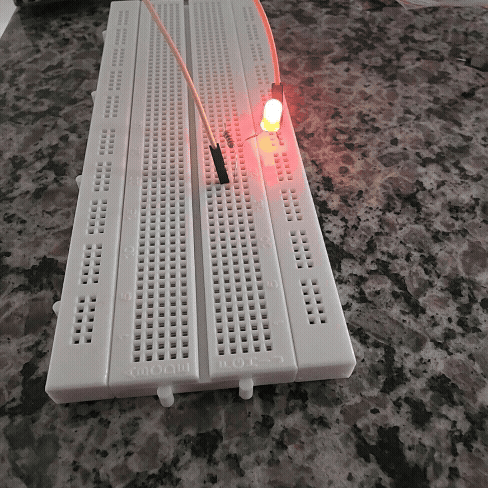
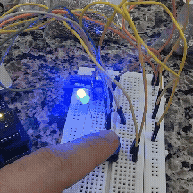
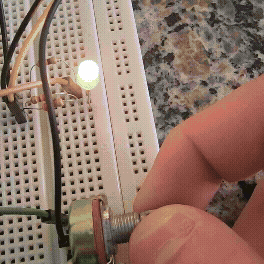
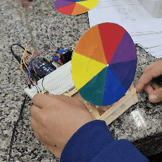
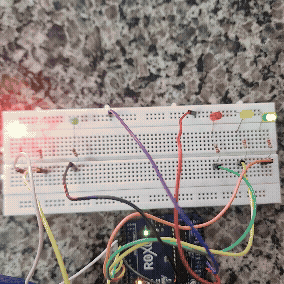
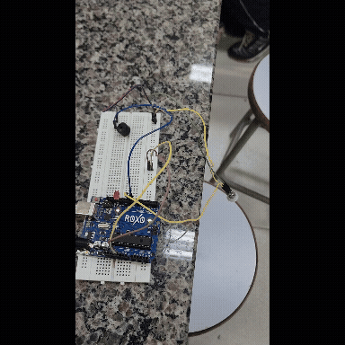
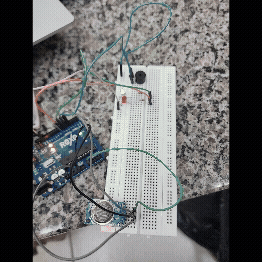

Explorando o mundo da tecnologia, automação e inclusão

Projeto inicial com Arduino IDE. Criamos um LED que acende gradualmente (fade-in) controlado por PWM.

Controle de cores com LED RGB usando Arduino IDE, obtendo as cores vermelho, verde e azul.

Projeto com LED RGB para controle das cores do arco-íris, do vermelho ao violeta.

Projeto com motor DC e um disco com as cores do arco-íris.

Projeto com LEDs representando dois semáforos.

Projeto com módulo sensor PIR

Projeto com sensorde gás MQ-2.
Projeto com motor sensor de obstáculo IR.
Nosso assistente usa a API de síntese de voz do navegador para ler todo o conteúdo da página em voz alta, tornando o site totalmente acessível.
Passe o cursor sobre o texto para ouvir a leitura.
Somos a turma do 2° Ano B do curso de Robótica. Este projeto foi desenvolvido com o objetivo de aprender eletrônica, programação e promover a inclusão através da tecnologia.
Utilizamos a plataforma Arduino para criar projetos práticos que desenvolvem habilidades em lógica de programação e prototipagem.
O Assistente Auditivo foi adicionado especialmente para tornar nosso portfólio acessível a todos os públicos.
Turma de Robótica
Projetos Realizados
Acessibilidade